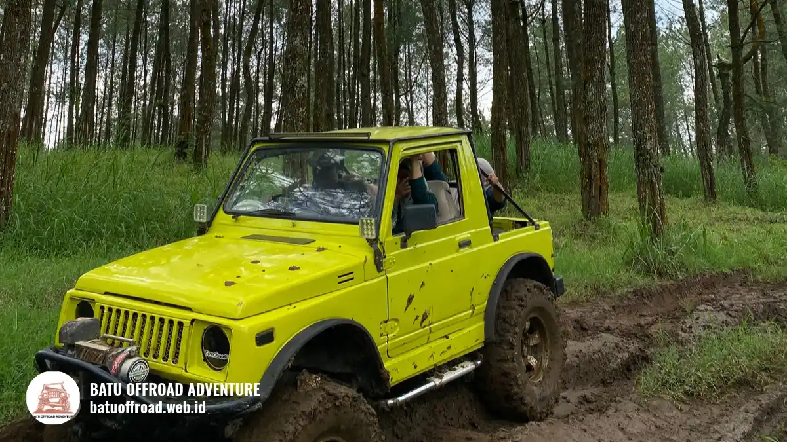

Offroad Hutan Pinus Batu Suasana Sejuk dan Jalur Alam
Offroad hutan pinus Batu adalah aktivitas berkendara di jalur tanah dan bebatuan yang melintasi kawasan hutan pinus di Kota Batu, Jawa Timur. Kegiatan ini menawarkan udara sejuk, pemandangan pohon pinus, dan tantangan jalur alam. Aktivitas ini cocok untuk pemula maupun penggemar offroad berpengalaman, selama peserta mengikuti panduan keselamatan dan aturan kawasan.
- Offroad hutan pinus Batu berlangsung di jalur tanah dan batu yang dikelilingi pohon pinus, dengan suasana sejuk khas dataran tinggi.
- Area yang sering disebut dalam perbincangan wisata adalah kawasan Coban Talun dan sekitarnya di Kota Batu.
- Kegiatan ini membutuhkan kehati-hatian, terutama saat jalur basah atau licin.
- Peserta perlu mematuhi aturan kawasan, menjaga kebersihan, dan menghormati tanaman serta satwa.
- Informasi paket dan booking sebaiknya diperoleh langsung dari operator seperti Batu Offroad Adventure.
Apa Daya Tarik Hutan Pinus untuk Offroad?
Daya tarik utama hutan pinus untuk offroad adalah kombinasi jalur alam dan suasana sejuk yang sulit ditemukan di kawasan perkotaan. Pohon pinus menciptakan lanskap vertikal yang teduh, sementara jalur tanah dan bebatuan memberi pengalaman berkendara yang berbeda dari jalan aspal biasa.
Hutan pinus di Kota Batu dikenal sebagai salah satu lanskap dataran tinggi yang menjadi tujuan wisata alam. Udara yang lebih sejuk dibanding wilayah dataran rendah membuat aktivitas luar ruangan terasa lebih nyaman. Karakter ini menjadi alasan utama banyak pengunjung memilih kawasan tersebut.
Selain suasana, jalur alam juga menawarkan variasi permukaan. Pengendara dapat menemui tanah padat, kerikil, dan area berbatu. Variasi ini membuat setiap sesi berkendara memiliki ritme yang berbeda, sehingga pengalaman terasa lebih hidup.
Bagi keluarga atau kelompok, hutan pinus juga menjadi ruang untuk berbagi pengalaman. Peserta bisa berhenti sejenak, menikmati pemandangan, dan berbincang tentang jalur yang baru dilalui.
Seperti Apa Sensasi Offroad di Jalur Pinus?
Sensasi offroad di jalur pinus terasa melalui getaran kendaraan, aroma pohon, dan perubahan cahaya di sela dedaunan. Jalur yang naik turun membuat pengendara harus fokus pada kemudi, sementara pemandangan hutan memberi jeda visual yang menyenangkan.
Ketika kendaraan melambat di tanjakan berbatu, peserta biasanya merasakan tekstur tanah yang berbeda di setiap roda. Pengalaman ini menuntut koordinasi, terutama bagi pemula yang belum terbiasa dengan medan tidak rata.
Di bagian jalur yang lebih teduh, suhu terasa lebih sejuk dan permukaan tanah bisa lebih lembap. Kondisi ini perlu diantisipasi dengan kecepatan yang terkendali dan jarak aman antarkendaraan.
Bagi peserta yang ingin menikmati suasana tanpa tergesa, pendamping atau pemandu lokal dapat membantu mengatur ritme perjalanan. Pendekatan ini membuat sensasi offroad lebih aman sekaligus lebih menyenangkan.
Apakah Jalur Offroad di Hutan Pinus Cocok untuk Pemula?
Jalur offroad di hutan pinus dapat dinikmati pemula selama mengikuti arahan pemandu dan memilih tingkat kesulitan yang sesuai. Medan yang dilalui umumnya memiliki variasi, sehingga peserta baru sebaiknya memulai dengan jalur yang lebih ramah.
Pemula biasanya perlu waktu untuk memahami respons kendaraan di permukaan tanah dan batu. Latihan singkat sebelum jalur utama membantu peserta lebih percaya diri. Tingkat kesulitan dapat bervariasi tergantung kondisi cuaca dan kondisi jalur pada hari tersebut.
Peserta yang belum berpengalaman juga disarankan tidak memaksakan diri pada tanjakan atau turunan curam. Keselamatan selalu lebih penting daripada kecepatan.
Bagaimana Menikmati Offroad di Hutan Pinus dengan Aman?
Menikmati offroad di hutan pinus dengan aman dimulai dari persiapan, sikap berkendara, dan kepatuhan pada aturan kawasan. Peserta yang siap secara fisik dan mental cenderung lebih tenang sepanjang perjalanan.
Berikut beberapa kebiasaan yang umum dianjurkan:
- Periksa kondisi kendaraan dan tekanan ban sebelum berangkat.
- Kenakan perlengkapan keselamatan seperti helm dan sepatu tertutup.
- Ikuti instruksi pemandu dan jangan berpindah jalur sembarangan.
- Jaga jarak aman dengan kendaraan di depan.
- Hindari berkendara saat kondisi jalur sangat licin tanpa pengalaman yang cukup.
Dalam banyak kasus, kecelakaan ringan terjadi karena kecepatan yang tidak sesuai dengan medan. Oleh karena itu, kesabaran menjadi bagian penting dari pengalaman offroad.

Jeep offroad kuning melintasi hutan pinus Batu
Apa Saja Tips Menikmati dan Mengabadikan Perjalanan?
Tips terbaik untuk menikmati dan mengabadikan perjalanan offroad adalah memilih waktu yang tepat, menyiapkan perlengkapan dasar, dan tetap menjaga keselamatan saat mengambil gambar. Cahaya pagi dan sore umumnya memberi warna yang lebih lembut pada pepohonan.
Berikut beberapa tips praktis:
- Datang pada pagi hari untuk merasakan udara paling sejuk.
- Gunakan kamera atau ponsel dengan tali pengaman agar tidak terjatuh saat dipakai.
- Berhenti di titik aman, jangan mengambil foto sambil berkendara.
- Bawa air minum dan jaket tipis karena suhu bisa berubah.
- Simpan barang berharga di tempat yang tidak mudah terjatuh selama perjalanan.
Foto terbaik sering kali diambil saat rombongan berhenti dan memberi ruang bagi pepohonan untuk tampil sebagai latar utama.
Mengapa Menjaga Kebersihan Alam Penting di Hutan Pinus?
Menjaga kebersihan alam penting karena hutan pinus adalah ekosistem yang harus dilindungi agar tetap lestari bagi generasi berikutnya. Sampah yang tertinggal dapat merusak tanah, mencemari air, dan mengganggu satwa di sekitarnya.
Setiap pengunjung memiliki peran kecil yang berdampak besar. Membawa pulang sampah, tidak merusak tanaman, dan tidak mengganggu satwa adalah langkah dasar yang dapat dilakukan siapa saja. Kebiasaan ini juga menjaga citra kawasan wisata sebagai tempat yang nyaman bagi semua orang.
Apa Saja Kegiatan Lain di Hutan Pinus Batu?
Selain offroad, hutan pinus Batu juga cocok untuk kegiatan santai seperti jalan santai, piknik ringan, dan sesi foto. Kombinasi ini membuat kawasan tersebut menarik bagi keluarga yang ingin menikmati alam dengan ritme yang lebih tenang.
Pengunjung yang tidak ingin berkendara dapat tetap menikmati suasana hutan dengan berjalan kaki di area yang diperbolehkan. Pilihan ini juga ramah bagi anak-anak dan lansia.
Apa Perbedaan Offroad di Hutan Pinus dengan Offroad di Area Lain?
Perbedaan utama terletak pada lanskap, suasana, dan karakter jalur. Hutan pinus menawarkan keteduhan dan udara sejuk, sedangkan area terbuka sering kali lebih panas dan berdebu. Pengalaman di hutan pinus biasanya terasa lebih tenang dan dekat dengan alam.
Jalur di hutan pinus juga cenderung memiliki variasi tekstur yang menarik, dengan kombinasi tanah, kerikil, dan batu. Hal ini memberi tantangan yang berbeda dari medan lumpur atau pasir.
Perbedaan ini menjadikan hutan pinus pilihan yang populer bagi peserta yang ingin pengalaman offroad sekaligus wisata alam.
Kesimpulan
Offroad hutan pinus Batu menawarkan kombinasi suasana sejuk, jalur alam yang menantang, dan pengalaman wisata yang berkesan. Keselamatan, kepatuhan pada aturan kawasan, dan kepedulian terhadap lingkungan tetap menjadi kunci agar kegiatan ini nyaman bagi semua pihak.
Ingin merasakan serunya langsung? Hubungi Batu Offroad Adventure di 0812-3398-9707 untuk info paket dan booking.
FAQ
- Seperti apa offroad di hutan pinus?
Offroad di hutan pinus adalah berkendara di jalur tanah dan batu di tengah pepohonan pinus. Suasananya sejuk dan teduh, dengan tantangan medan yang bervariasi sesuai kondisi jalur. - Kapan waktu paling sejuk untuk offroad di hutan pinus Batu?
Waktu pagi umumnya terasa lebih sejuk dibanding siang. Kondisi cuaca tetap dapat berubah, sehingga pengunjung disarankan memeriksa kondisi terkini sebelum berangkat. - Apakah boleh mengambil foto selama offroad?
Boleh, selama foto diambil di titik yang aman dan berhenti sejenak. Jangan mengambil foto sambil mengemudi karena dapat membahayakan diri sendiri dan orang lain. - Apa aturan yang perlu dipatuhi di kawasan hutan pinus?
Pengunjung umumnya perlu mengikuti instruksi pemandu, tidak merusak tanaman, membawa pulang sampah, dan menghormati satwa serta warga setempat. - Bagaimana cara booking Batu Offroad Adventure?
Untuk info paket dan booking, hubungi Batu Offroad Adventure di 0812-3398-9707.